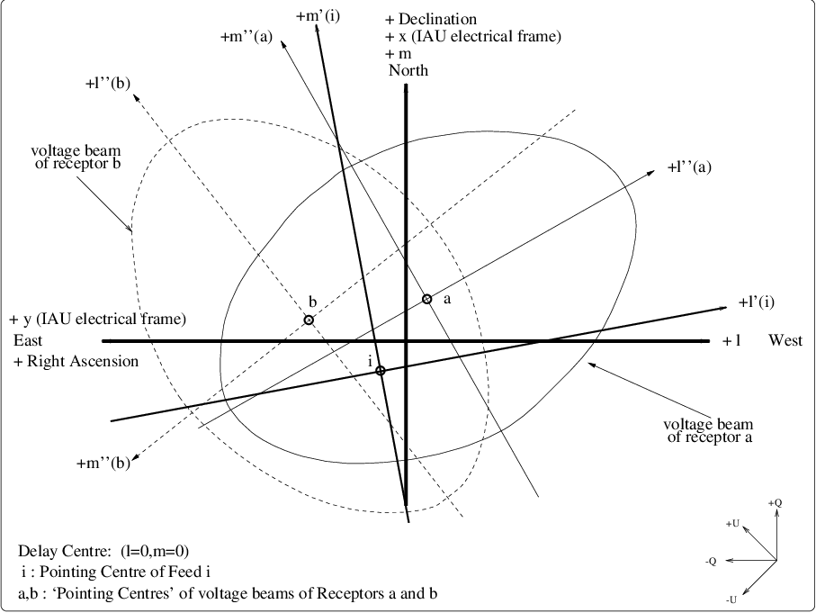

File: /aips++/nfra/185.latex Symbols File: /aips++/nfra/megi-symbols.tex
Abstract: This note is a step towards an ‘official’ AIPS++ description of the Measurement Equation, based on an agreed set of names and conventions. The latter have been defined in a separate TeX file, and can (should) be used in subsequent AIPS++ documents to ensure consistency.
The matrix-based Measurement Equation (ME) of a Generic Radio Telescope was developed by Hamaker, Bregman and Sault [2] [3], based on earlier work by Bregman [1]. After discussion by Noordam [5] and Cornwell [6] [7] [8] [9] [10] [11], the M.E. has been adopted as the generic foundation of the uv-data calibration and imaging part of AIPS++. In the not too distant future, an ‘official’ AIPS++ description of the ME will be needed, with agreed conventions and nomenclature (see Appendix A). This note is a step towards that goal.
The heart of the M.E. is formed by the feed-based ‘Jones’ matrices, which describe the effects of various parts of the observing instrument on the signal. The main section of this document is devoted to describing the basic form of the Jones matrices in linear and circular polarisation coordinates. Another section discusses the conditions under which their order may be modified (matrices do not always commute).
It is expected that the details of the M.E. (and of this note) will be refined during the first few iterations of design and implementation of AIPS++. But the structure of the M.E. formalism as presented here appears to be rich enough to accomodate all existing and planned radio telescopes. This includes ‘exotic’ ones like cylindrical mirrors, phased arrays, and interferometer arrays with very dissimilar antennas. Further refinements should only require the addition of new Jones matrices, or devising new expressions for existing matrix elements.
In order to test this bold assertion, the various institutes might endeavour to model their own telescopes in terms of the precise and common language of the M.E., using this note as a reference. The following ‘rules’ are probably good ones:
It is also good to realise that there are two basic forms of ME, which should not be confused: In the physical form, each instrumental effect is modelled separately by its own matrix. This is useful for simulation purposes. In the mathematical form, effects are ‘lumped together’ if they cannot be solved for separately. Example: the various contributions to the receiver gain, and tropospheric gain.
Acknowledgements: The author has greatly benefited from detailed discussions with Jayaram Chengalur, Jaap Bregman, Johan Hamaker, Tim Cornwell, Wim Brouw and Mark Wieringa.
For the moment, it will be assumed that there is a single point source at an arbitrary position (direction) w.r.t. the fringe-tracking centre, and that observing bandwidth and integration time are negligible. Multiple and extended sources, and the effects of non-zero bandwidth and integration time will be treated for the Full Measurement Equation in section 3.
For a given interferometer, the measured visibilities can be written as a 4-element ‘coherency vector’ , which is related to the so-called ‘Stokes vector’ of the observed source by a matrix equation,
| (1) |
The subscripts and are the labels of the two feeds that make up the interferometer. The subscripts and are the labels of the two output IF-channels from each feed.1
The ‘Stokes matrix’ is a constant coordinate transformation matrix. It is discussed in detail in section 4 below. The real heart of the M.E. is the ‘direct matrix product’ of two feed-based Jones matrices.
The ‘Stokes-to-Stokes’ transmission of a Stokes vector through an ‘optical’ element may be described by multiplication with a Mueller matrix [2] [3]. Using equation 1:
| (2) |
Mueller matrices are useful in simulation, when studying the effect of instrumental effects on a test source . They can be easily generalised to the full M.E. (see section 3).
It will be assumed (for the moment) that all instrumental effects can be factored into feed-based contributions, i.e. any interferometer-based effects are assumed to be negligible (see section 3). The interferometer response matrix then consists of a ‘direct matrix product’2 of two feed-based response matrices, called ‘Jones matrices’. The reader will note that this factoring is the polarimetric generalisation of the familiar ‘Selfcal assumption’, in which the (scalar) gains are assumed to be feed-based rather than interferometer-based.
The Jones matrix for feed can be decomposed into a product of several Jones matrices, each of which models a specific feed-based instrumental effect in the signal path:
| (3) |
in which
| ionospheric Faraday rotation |
| atmospheric complex gain |
| factored Fourier Transform kernel |
| projected receptor orientation(s) w.r.t. the sky |
| voltage primary beam |
| position-independent receptor cross-leakage |
| commutation of IF-channels |
| hybrid (conversion to circular polarisation coordinates) |
| electronic complex gain (feed-based contributions only) |
Matrices between brackets ([ ]) are not present in all systems. is the ‘Total Voltage Pattern’ of an arbitrary feed, which is usually split up into three sub-matrices: . Jones matrices that model ‘image-plane’ effects depend on the source position (direction) . Some also depend on the antenna position . Of course most of them depend on time and frequency as well. The various Jones matrices are treated in some detail in section 5.
Since the Jones matrices do not always commute with each other, their order is important. In principle, they should be placed in the ‘physical’ order, i.e. the order in which the signal is affected by them while traversing the instrument. In practice, this is not always possible or desirable. Section 6 discusses the implications of choosing a different order.
The output signals from the two IF-channels of a ‘tied array’ is the weighted sum of the IF-channel signals from individual feeds. A tied array is itself a feed (see definition in appendix A), modelled by its own Jones matrix. For a single point source, we get:
| (4) |
and for an interferometer between two tied arrays and with and constituent feeds respectively:
| (5) |
See also section 6.4. The matrix models electronic gain effects on the added signal of the tied array feed . The can be solved by the usual Selfcal methods, in contrast to instrumental errors in the constituent feeds before adding. The latter will often cause decorrellation, and thus closure errors in an interferometer.
Since a tied array feed can be modelled by a Jones matrix, it can be combined with any other type of feed to form an interferometer. Examples are the use of WSRT and VLA as tied arrays in VLBI arrays. Note that this is made possible by factoring the Fourier Transform kernel into and , and including the latter in the Jones matrices of the individual feeds (see equ 28).
Obviously, the primary beam of a tied array can be rather complicated, but it is fully modelled by equ 4. Moreover, the contributing feeds in a tied array are allowed to be quite dissimilar. It is nor even necessary for their receptors (dipoles) to be aligned with each other! Thus, equation 4 can also be used to model ‘difficult’ telescopes like Ooty or MOST, or an element of the future Square Km Array (SKAI). This puts the crown on the remarkable power of the Measurement Equation.
Using the definition in appendix A, each beam in a multiple beam system should be treated like a separate logical feed, modelled by its own Jones matrix. Any communality between them can be modelled in the form of shared parameters in the expressions for the various matrix elements.
For ‘real’ incoherent sources, observed with a ‘real’ telescope, equ 1 becomes:
| (6) |
The visibility vector is integrated over the extent of the sources (), over the integration time () and over the channel bandwidth (). Integration over the aperture () is taken care of by the primary beam properties.
There are only four integration coordinates, whose units are determined by the flux density units in which is expressed: . These coordinates define a 4-dimensional ‘integration cell’. If the variation of is linear over this cell, integration is not necessary:
| (7) |
in which is the value for source at the centre of the cell, for and . If the variation of over the cell can be approximated by a polynomial of order , then it is sufficient to calculate only the 2nd derivative(s) at the centre of the cell:
| (8) |
Here it is assumed that the 2nd derivatives are be constant over the cell, i.e. the cross-derivatives are zero.
Until now, we have assumed that all instrumental effects could be factored into feed-based contributions, i.e. we have ignored any interferometer-based effects. This is justified for a well-designed system, provided that the signal-to-noise ratio is large enough (thermal noise causes interferometer-based errors, albeit with a an average of zero). However, if systematic errors do occur, they can be modelled:
| (9) |
The diagonal matrix , the ‘Correlator matrix’, represents interferometer-based corrections that are applied to the uv-data in software by the on-line system. Examples are the Van Vleck correction. In the newest correlators, it approaches a constant ().
| (10) |
The diagonal matrix represents multiplicative interferometer-based effects.
| (11) |
The 4-element vector represents additive interferometer-based effects. Examples are receiver noise, and correlator offsets.
| (12) |
In some cases, interferometer-based effects can be calibrated, e.g. when they appear to be constant in time. It will be interesting to see how many of them will disappear as a result of better modelling with the Measurement Equation. In any case, it is desirable that the cause of interferometer-based effects is properly understood (simulation!).
In the signal domain, the electric field vector of the incident plane wave can be represented either in a linear polarisation coordinate frame or a circular polarisation coordinate frame . Jones matrices are linear operators in the chosen frame:
| (13) |
For linear polarisation coordinates, equation 1 becomes:
| (14) |
and there is a similar expression for circular polarisation coordinates. Thus, as emphasised in [2], the Stokes vector and the coherency vector represent the same physical quantity, but in different abstract coordinate frames. A ‘Stokes matrix’ is a coordinate transformation matrix in the coherency domain: transforms the representation from Stokes coordinates (I,Q,U,V) to linear polarisation coordinates (). Similarly, transforms to circular polarisation coordinates (). Following the convention of [4], we write:3
| (15) |
-matrices are almost unitary, i.e. except for a normalising constant: . cannot be factored into feed-based parts. The two Stokes matrices are related by:
| (16) |
with4
| (18) |
Most Jones matrices will have the same form in both polarisation coordinate frames. But if a Jones matrix is expressed in terms of parameters that are defined in one of the two frames, it will have two different but related forms. This is the case for Faraday rotation , receptor orientation , and receptor cross-leakage , in which the orientation w.r.t. the frame plays a role. The two forms of a Jones matrix can be converted into each other by the coordinate transformation matrix and its inverse:
| (19) |
The conversion may be done by hand, using (the elements may be complex):
| (20) |
| (21) |
Applying these general expressions to rotation and ellipticity matrices (see Appendix for their definition), the conversions are:
Usually, all matrices in a ‘Jones chain’ will be defined in the same coordinate frame. An exception is the case where linear dipole receptors are used in conjunction with a ‘hybrid’ to create pseudo-circular receptors:
in which represents an electronic implementation of the coordinate transformation matrix . All these expressions are equivalent in the sense that, in conjunction with the indicated Stokes matrix, they produce a coherency vector in circular polarisation coordinates. The choice of which expression to use depends on whether one wishes to model the feed explicitly in terms of its physical (dipole) properties, or whether one wishes to regard is as a ‘black box’ circular feed with unknown internal structure.
In this section, the ‘generic’ form of various feed-based instrumental Jones matrices (operators) will be treated in some detail.
It will be noted that for each matrix, the 4 elements have been given an ‘official’ name (e.g. ). The (possibly naive) idea is that, if the structure of the Measurement Equation is more or less complete, these ‘standard’ matrix elements could be referred to explicitly by their official names in other AIPS++ documents (and code), for instance to replace them with specific expressions for particular telescopes or purposes.
The subscript convention is as follows: is an element of matrix for feed , which models the ‘coupling factor’ for the signal going from receptor to IF-channel . Where possible, the expressions have been reduced to matrices like the diagonal matrix (), rotation matrix () etc. These are defined in the Appendix.
The matrix represents (ionospheric) Faraday rotation of the electric vector over an angle w.r.t. the celestial -frame. Since is defined in one of the polarisation coordinate frames, there will be two different forms for (see also section 4). For linear polarisation coordinates:
| (25) |
In circular polarisation coordinates, the matrix is a diagonal matrix which introduces a phase difference, or rather a delay difference. It expresses the fact that ionospheric Faraday rotation is caused by a (strongly frequency-dependent) difference in propagation velocity between right-hand and left-hand circularly polarised signals when travelling through a charged medium like the ionosphere. In terms of the Faraday rotation angle (see above), we get:
| (26) |
In principle, the Faraday rotation angle is a function of source direction and feed position: ). However, Faraday rotation is a large-scale effect, so it will usually have the same value for all sources in the primary beam: . For arrays smaller than a few km, the rotation angle will usually also be the same for all feeds: . These assumptions reduce the number of independent parameters considerably.
The matrix represents complex atmospheric gain: refraction, extinction and perhaps non-isoplanaticity. Since does not depend on a polarisation coordinate frame, there is only one form:
| (27) |
The matrix is diagonal because the atmosphere does is not supposed to cause cross-talk. The diagonal elements are assumed to be equal, because the atmosphere is not supposed to affect polarisation.
Atmospheric effects in the ‘pupil-plane’ (i.e. originating directly above the feeds) can be modelled with a complex gain. It is less clear how to deal with effects that originate higher up in the atmosphere, i.e. between pupil plane and image plane.
A phase screen over the array can be modelled as in which the phase is assumed to be a low-order 2D polynomial as a function of the feed position :
The matrix represents the Fourier Transform kernel, which can also be seen as a phase weight factor). It is factored into feed-based parts in order to be able to model a tied array (see section 2.2). Since does not depend on the polarisation coordinate frame, there is only one form:
| (28) |
in which , which depends on the projected feed position and the source direction w.r.t. the fringe tracking centre , and .
If , the interferometer matrix is a diagonal matrix with equal elements. This is equivalent to a multiplicative factor of the familiar form , i.e. the Fourier Transform kernel or ‘phase weight’ for the baseline . For small fields, , so becomes a 2D FT.
The receptors of a feed are practically always co-located, i.e. they have the same phase-centre: , so . But note that it is possible to model a receptors that are not co-located, i.e. . It is not immediately obvious why one would want to do such a thing, but it is good to know that the formalism allows it.
The ‘Projection matrix’ models the projected orientation of the receptors w.r.t. the electrical frame on the sky, as seen from the direction of the source (see also section 5.6 below). Since the orientations are defined in one of the polarisation coordinate frames, there will be two different forms for (see section 4). For linear polarisation coordinates:
| (29) |
in which is the projected angle between the positive -axis and the orientation of receptor (see also Appendix ??). There is an implicit assumption here that the feed has perpendicular receptors and is fully steerable, which is the case for the majority of existing telescopes. See the next section for the case where the projected orientations are not perpendicular ().
For circular polarisation coordinates:
| (30) |
It is sometimes useful to introduce an intermediate coordinate frame, attached to the feed . In that case: . The ‘offset’ angle between receptor and the frame of feed will be zero in most cases. The angle is the parallactic angle, i.e. the angle between two great circles through the source, and through the celestial North Pole and the local zenith respectively. This parallactic angle is zero for an equatorial feed, and varies smoothly with for an alt-az feed:
The M.E. formalism must also be able to deal with more ‘exotic’ antennas like parabolic cylinders (Arecibo, MOST) or horizontal dipole arrays (SKAI). In those cases, the projected angles of the two receptors will generally not be equal, i.e. .
NB: The angle of receptor is defined w.r.t. the -axis rather than the -axis. This ensures that , so that matrix reduces to a simple rotation , in the common case described in section 5.4 above.
For linear polarisation coordinates becomes a ‘pseudo-rotation’ (compare with equ 29 above):
| (32) |
For circular polarisation coordinates:
The future large radio telescopes may have feeds in the form of dipole arrays, possibly tilted over an angle towards the South w.r.t. the local horizontal plane. In that case, the projected angle between a North-South (NS) dipole and the -axis differs from the projected angle between an East-West (EW) dipole and the -axis (I hope this is correct now):
The effects of the primary beam are ignored by [2], which deals implicitly with on-axis sources observed by feeds with fully steerable parabolic mirrors. The AIPS++ M.E. must of course deal with the general case, including ‘exotic’ telescopes like Arecibo, MOST and SKAI. To this end, we define a total voltage pattern matrix , which fully describes the conversion of the incident electric field (V/m) into two voltages (V):
| (35) |
NB: Since the Jones matrix is feed-based, it deals with voltage beams. The power beam for interferometer is modelled by . Note that the formalism deals implicitly with interferometers between feeds with quite dissimilar primary beams.
In practice, it is often convenient to split the matrix into a chain of sub-matrices:
This is most useful in the common case of a fully steerable parabolic antenna. The voltage patterns of its feed(s) have a fixed shape, which are rotated and translated w.r.t. the sky when pointing the antenna in different directions. What remains after splitting off and is an (approximately) real and diagonal matrix which decsribes the position-dependent primary beam attenuation and the position-dependent leakage (see also equation 38 below):
| (36) |
As an example, the diagonal elements of for an idealised axially symmetric gaussian beam and dipole receptorswould look like:
Note that the two receptor beams are each described in their own coordinate frame and projected on the sky (see Appendix A). The projection matrix only takes care of electrical rotation, but not of the rotation of the voltage beam on the sky!.
Equation 37 illustrates that the voltage beam of a dipole receptor will be slightly elongated in the direction of the dipole by a factor , even if the mirror is perfectly circular and symmetrical. Obviously, the two asymmetric voltage beams of a feed will not coincide, because they are oriented differently. The resulting position-dependent difference is one cause of off-axis instrumental polarisation.
In reality, things will be more complicated, especially for off-axis sources. For instance, standing waves between the primary mirror and the frontend box, or scattering off support legs, may cause position-dependent leakage terms. Since these cannot be part of , they must be modelled as off-diagonal elements of itself.
In general, will be more complicated for antennas with less symmetry. In some exotic cases, it may not be very useful to split off or even , although it is always allowed. In any case, the M.E. formalism offers a framework for the ful description of the primary beam of any radio telescope that can be conceived.
The off-diagonal elements and of describe ‘leakage’ between receptors, i.e. the extent to which each receptor is sensitive to the radiation that is supposed to be picked up by the other one.
It is customary to split off the position-independent part and of this leakage into a separate matrix :
Usually, the position-dependent leakage coefficients and are assumed to be zero, but that is not always justified.
If the leakage coefficients are determined empirically by calibration, it is not necessary to know the details of the leakage mechanism. It is sufficient to solve for the elements of . In that case, there is only one form:
| (39) |
But in many cases, position-independent leakage can be physically explained by deviations from the nominal receptor position angles (see ), and by deviations from nominal receptor ‘ellipticities’ . For linear polarisation coordinates:
The sign gives the approximation for a well-designed system. Often the two receptors are mounted in a single unit, so position angle deviations caused by mechanical bending of the feed structure are the same for both: . One might also argue that ellipticity should be a reciprocal effect, so that . This is roughly consistent with WSRT experience, and these two assumptions are implicit in equ 27 of [3]. However, for high accuracy polarisation measurements, the parameters for each receptor should be at least partly independent.
For circular polarisation coordinates (see equ 22):
Again, the sign gives the approximation for and . See equation 34 for an expression for () where . The expression for () with is similar, but with real coefficients, as expected for circular polarisation coordinates.
In some systems, the receptor signals can be switched (commuted) between IF-channels for calibration.
| (42) |
In some cases, circularly polarised receptors consist of linearly polarised dipoles, followed by a ‘hybrid’. The latter is an electronic implementation of the coordinate transformation matrix from linear to circular polarisation coordinates:
| (43) |
See equation 18 for the definition of . If no hybrid is present, is the unit matrix. Any gain effects in these electronic components are ignored, or rather they are assumed to be ‘absorbed’ by the gain matrix .
The matrix represents the product of all complex electronic gain effects per output IF-channel and . It models the effects of all feed-based electronics (amplifiers, mixers, LO, cables etc). (The correlator causes interferometer-based effects, which are discussed in section 3).
| (44) |
The sign indicates that electronic cross-talk is assumed to be absent in well-designed systems, i.e. . Since this kind of crosstalk is not necessarily reciprocal, .
In reality, will be a product of many electronic gain matrices, one for each linear electronic component in the system: Although a solver will not be able to distinguish these different effects from each other, but it is useful for simulation of instrumental effects.
NB: This section is a little polemical, and should disappear when things are more settled.
There has been some debate about the concept of a ‘configuration matrix’ , as proposed by [2], which models the nominal feed configuration. It represents an idealised coordinate transformation ‘from the frame of the rotating antenna mount to the electronic voltage frame’. It models any rotation of the receptors w.r.t. ‘the antenna mount’, which must be added to the ‘parallactic’ rotation of the antenna w.r.t. the sky. also models the hybrid if present, but it ignores the primary beam . Any deviations from this idealised behaviour are covered by the ‘leakage’ matrix .
However, the proposed is most suitable for the special case of fully steerable parabolic antennas. The introduction of an intermediate antenna coordinate frame seems an unnecessary complication in those cases where the mirror is not steerable, or is absent entirely (like in a dipole array). Moreover, violates the rules of modelling by lumping together two effects that have nothing to do with each other, and do not even occur at the same point in the signal path.
In principle it is a good idea to have one matrix that models the transition from electric fields (V/m) to electric voltages (V), and this is precisely what does. This very general matrix can be split up if relevant into sub-matrices like , and . The matrix has no part in this, since it represents a rearranging of electronic signals (V), just like (and will come after if present!). The projection matrix takes care of the entire orientation angle of the receptors w.r.t. the sky, which is the only thing that really counts.
The Jones matrices in equation 3 generally do not commute, so their order is important. In principle, the matrices must be placed in the ‘physical’ order, i.e. the order of the signal propagation path. But in the equations that are enshrined in existing reduction packages, this is often not the case. This begs the question why these ‘wrong’ equations seem to produce so many good (even spectacular) results. The question is especially important since a different order often results in considerable gains in computational efficiency.
The answer is that, for existing (arrays of) circularly symmetric parabolic feeds, many Jones matrices can be approximated by matrices that do commute with at least some of the others.
We will analyse this in terms of those special matrices (see Appendix for their definition), whose commutation properties are:
In order to study the general implications of changing the order of multiplication, we take the two products and of two general matrices (whose elements may be complex):
The difference (i.e. commutation error) between the two matrix products can be expressed as a matrix :
| (46) |
Thus, by taking the wrong matrix order, one makes the following fractional errors of the following
order in the result:
- in the diagonal elements: of the order of ,
i.e. the ratio of non-diagonal and diagonal elements of the original matrices (which is often small).
- in the off-diagonal elements: in the order of ,
i.e. they will be smaller as the diagonal elements of the original matrices are more equal.
If one of the two matrices is diagonal, e.g. then this reduces to:
| (47) |
The (not very surprising) conclusion is that the error caused by taking the wrong matrix order is smaller when one of the matrices is diagonal, and the values of its diagonal elements are almsot equal.
It is sufficient to discuss the commutation properties of the feed-based Jones matrices because, if commutes with and with , then commutes with :
| (48) |
Inspecting the various Jones matrices separately:
| = pure rotation |
| = diagonal matrix |
| = multiplication |
| = multiplication if (virtually always the case) |
| = pure rotation if |
| = diagonal matrix if |
| = pseudo-rotation if |
| = A general matrix if |
| = diagonal matrix if no cross-leakage () |
| = multiplication if also for all |
| unit matrix if small leakage, i.e. () |
| = |
| if and |
| = () () |
| if and |
| = anti-diagonal matrix: a problem, if present.... |
| = effectively hidden if present, see equation 24 |
| = diagonal matrix if no cross-talk |
Problems are caused predominantly by matrices with non-zero off-diagonal elements like , , and if . Of these, only is present in all telescopes. will be a problem for SKAI, bacause .
The following changes in the order of Jones matrices is allowed, but only under the indicated conditions. NB: Some Jones matrices will commute if it can be assumed that the observed source is compact, dominating, unpolarised and near the centre of the field. This is often the case.
The Jones matrices may split up in two groups: . In these terms, the full M.E. (ignoring normalisation factors, see equ 6) becomes:
| (49) |
We now see the reason for placing the integration over and to the left of the sum over sources. Since it is computationally advantageous to minimise the number of Jones matrices that operate in the image plane, it must be investigated whether Jones matrices that do not depend on the source position can be moved to the left in the chain, using the rules in section 6.3 above. Depending on the chosen coordinate system, (and always keeping in mind the conditions for re-ordering Jones matrices), the following split appears to be the maximum obtainable:
This is what is done implicitly in some existing reduction packages.
For a tied array (ignoring integration and weight factors for the moment), equation 5 becomes:
| (53) |
Under extremely favourable conditions, i.e. if:
- individual feed beams per tied array are identical.
- Faraday rotation is the same for an entire tied array
- All receptors of a tied array have the same orientation.
- receptor cross-leakages are small.
- tied array feed signals are corrected before adding.
- there are no delay errors.
then equation 53 can be reduced to:
| (54) |
[1] J.D.Bregman, J.E.Noordam Matrix formalism for Interferometric Polarisation Calibration. Internal proposal to AIPS++ project, April 1993.
[2] J.P.Hamaker, J.D.Bregman, R.J. Sault Understanding Radio Polarimetry I: Mathematical foundations. Accepted by Astronomy and Astrophysics, Sept 1995. (For a preprint, see http:://www.nfra.nl/hamaker).
[3] R.J.Sault, J.P.Hamaker, J.D.Bregman Understanding Radio Polarimetry II: Instrumental calibration of an interferometer array. Accepted by Astronomy and Astrophysics, Sept 1995. (For a preprint, see http:://www.nfra.nl/hamaker).
[4] J.P.Hamaker, J.D.Bregman Understanding Radio Polarimetry III: Interpreting the IAU/IEEE definitions of the Stokes parameters Submitted to Astronomy and Astrophysics, Oct 1995. (For a preprint, see http:://www.nfra.nl/hamaker).
[5] J.E.Noordam Some practical aspects of the matrix-based Measurement Equation of a generic radio telescope. AIPS++ Implementation note 182 (June 1995)
[6] T.J.Cornwell Calibration and Imaging using the Measurement Equation for the Generic Interferometer. AIPS++ Implementation note 183 (July 1995)
[7] T.J.Cornwell The Generic Interferometer I: Overview of Calibration and Imaging AIPS++ Implementation note 183 (August 1995)
[8] T.J.Cornwell The Generic Interferometer II: Image Solvers AIPS++ Implementation note ... (revised version, Aug 1995) developing
[9] T.J.Cornwell The Generic Interferometer III: Analysis of Calibration and Imaging AIPS++ Implementation note ... (Nov 1995) developing
[10] T.J.Cornwell, M.H.Wieringa The Generic Interferometer IV: Design of Calibration and Imaging AIPS++ Implementation note ... (Dec 1995) developing
[11] T.J.Cornwell The Generic Interferometer V: Specification of Calibration and Imaging AIPS++ Implementation note ... (Sept 1995) developing
[12] A.R.Thompson, J.M.Moran, G.W.Swenson Interferometry and Synthesis in Radio Astronomy. John Wiley and Sons (1986)
[13] R.A.Perley, F.R.Schwab, A.H.Bridle Synthesis Imaging in Radio Astronomy. Astronomical Society of the Pacific Conference Series, Vol 6 (1989)
A consistent nomenclature and precise definitions are extremely important for a software package like AIPS++, which aspires to be a ‘world reduction package’, and to which workers with a large spacetime separation are supposed to contribute. One of the most sensitive areas in this respect is the Measurement Equation, which underlies the central subject of uv-calibration and imaging.
However, it is not easy to define, adopt and enforce the use of a suitable set of conventions. This appendix is a hopefully useful step in that process. It proposes coordinate conventions and some definitions (notably the one for feed!), and lists symbols that have been defined in a separate TeX file (referred to as \include(megi-symbols) in this LaTeX document). The TeX syntax is shown in small print (e.g. \FeedI), for easy reference.
The following definitions are displayed in a distinctive font throughout the text of this document in order to emphasize that they have been defined explicitly.
| \FeedI,\FeedJ | feed labels |
| \RcpA,\RcpB | receptor labels, two per feed. |
| \IFP,\IFQ | IF-channel labels,two per feed. |
| \RPol,\LPol | circular polarisation (right, left) |
| \XPol,\YPol | linear polarisation (N-S, E-W) |
| A\ssLin,A\ssCir | superscripts for linear and circular polarisation |
| A\ssI,A\ssIJ | feed subscripts |
The subscript convention of matrix elements is as follows: refers to a matrix element of matrix for feed , which models the coupling of the signal going from receptor to IF-channel .
Fig 1 gives an overview of the coordinate system(s) used. All angles on the Sky are measured counter-clockwise, i.e. in the direction North through East. When relevant, ‘axis’ means ‘positive axis’ (e.g. the positive -axis). It is important to make a distinction between:
The beam frame(s): In order to calculate the effects of the primary beam on the signal of a source in direction , the shape and position of the voltage beams of each receptor on the Sky has to be calculated. For fully steerable parabolic antennas, which have constant beamshapes, this can be done most conveniently in coordinate frames defined by the projected position angles of the receptors. To allow for the fact that the two beams of a feed are closely coupled, an intermediate feed-frame is defined also.
The electrical frame: For the polarisation of the signal, the only relevant parameters are the projected angles w.r.t. the ‘electrical’ axes and defined by the IAU.
NB: In order to see that two frames are needed, consider that Faraday rotation rotates the electric vector, but not the beam on the sky.
| Frame of the entire telescope (single dish or array): |
| \vvAntPos | Projected feed (receptor?) position vector |
| \ccU,\ccV,\ccW | Projected baseline coordinates |
| \vvUVW | Projected baseline vector |
| Electrical frame on the sky (IAU definition): |
| \ccX,\ccY | IAU electrical frame on the sky. |
| \ccZ | propagation direction of incident field. |
| \aaXY | Angle from -axis to -axis () |
| \ccXPol,\ccYPol | linear polarisation coordinates. |
| \ccRPol,\ccLPol | circular polarisation coordinates. |
| Sky frame (w.r.t. fringe stopping centre): |
| \ccL,\ccM,\ccN | Coordinates (direction cosines) |
| \vvLMN | Source direction vector |
| \vvFTC | Fringe Tracking Centre |
| \vvMC | Map Centre |
| \aaLM | Angle from -axis to -axis () |
| \aaLX | Angle from -axis to -axis () |
| Coordinate frame of feed , projected on the sky: |
| \ccLI,\ccMI | Coordinates |
| \ccLIO,\ccMIO | Origin () of feed-frame. |
| \aaLI | Angle from -axis to -axis |
| \aaXI | Angle from -axis to -axis () |
| Coordinate frame of receptor of feed , projected on the sky: |
| \ccLIA,\ccMIA | Coordinates |
| \ccLIAO,\ccMIAO | Origin () of receptor-frame. |
| \aaIA | Angle from -axis to -axis |
| \aaXA | Angle from -axis to -axis () |
| Coordinate frame of receptor of feed , projected on the sky: |
| \ccLIB,\ccMIB | Coordinates |
| \ccLIBO,\ccMIBO | Origin () of receptor-frame. |
| \aaIB | Angle from -axis to -axis |
| \aaYB | Angle from -axis (!) to -axis () |

A (rather crowded) overview of the various coordinate frames for the Measurement Equation. See also the text. The origin of the Sky frame () is defined by the fringe stopping centre. The origin of the feed-frame () is defined by the pointing centre of feed . The ‘pointing centres’ of the voltage beams of receptors and (marked with a and b) define the origins of the receptor-frames () and (). The shapes and position offsets of these voltage beams are exaggerated, in order to emphasise that they do not necessarily coincide.
The coordinates and of the frames of receptors and in equ 37 are related to the celestial coordinate frame in a two-step process. First we define an intermediate feed-frame for feed , projected on the Sky:
| (55) |
in which is the Pointing Centre of feed , and is a rotation over the projected angle between the positive -axis of the Sky frame and the -axis of the feed-frame.
The voltage beams themselves are best modelled in a receptor-frame (see equ 37), again projected on the Sky. For receptor we have:
| (56) |
The matrix represents a rotation over the angle between the positive -axis of the feed-frame and the -axis of the relevant receptor-frame. For receptor :
| (57) |
and represent pointing offsets of receptor and respectively. These can be used to model ‘beam-squint’ of feeds that are not axially symmetric.
The following matrices and vectors play a role in the Measurement Equation:
| \vvIQUV | Stokes vector of the source (I,Q,U,V). |
| \vvCoh,\vvCohEl | Coherency vector, and one of its elements. |
| \mmStokes | Stokes matrix, conversion between polarisation representations. |
| \mmStokes\ssLin | Conversion to linear representation. |
| \mmStokes\ssCir | Conversion to circular representation. |
| \mmMueller | Mueller matrix: Stokes to Stokes through optical ‘element’ |
| \mmXifr,\mmXifrEl | Correlator matrix (). |
| \mmMifr,\mmMifrEl | Multiplicative interferometer-based gain matrix (). |
| \vvAifr,\vvAifrEl | Additive interferometer-based gain vector. |
The following feed-based Jones matrices have a well-defined meaning:
| \mjJones,\mjJonesEl | Jones matrix, and one of its elements. |
| \mjFrot,\mjFrotEl | Faraday rotation (of the plane of linear pol.) |
| \mjTrop,\mjTropEl | Atmospheric gain (refraction, extinction). |
| \mjProj,\mjProjEl | Projected receptor angle(s) w.r.t. frame |
| \mjBtot,\mjBtotEl | Total feed voltage pattern (i.e. . |
| \mjBeam,\mjBeamEl | Traditional feed voltage beam. |
| \mjConf,\mjConfEl | Feed configuration matrix (...). |
| \mjDrcp,\mjDrcpEl | Leakage between receptors and . |
| \mjHybr,\mjHybrEl | Hybrid network, to convert to circular pol. |
| \mjGrec,\mjGrecEl | feed-based electronic gain. |
| \mjKern,\mjKernEl | Fourier Transform Kernel (baseline phase weight) |
| \mjKref,\mjKrefEl | FT kernel for the fringe-stopping centre. |
| \mjKoff,\mjKoffEl | FT kernel relative to the fringe-stopping centre. |
| \mjQsum,\mjQsumEl | Electronic gain of tied-array feed after summing. |
| Some special matrices and vectors: |
| \mmZero | Zero matrix |
| \vvZero | Zero vector |
| \mmUnit | Unit matrix |
| \mjDiag | Diagonal matrix with elements |
| \mjMult | Multiplication with factor |
| \mjRot | [pseudo] Rotation over an angle , |
| \mjEll | Ellipticity angle[s] , |
| \mjLtoC | Signal conversion from linear to circular. |
| \mjCtoL | Signal conversion from circular to linear. |
Definitions of some special matrices:
| (58) |
A ‘pure’ rotation is a special case of a ‘pseudo rotation’ :
| (59) |
Ellipticity:
| (60) |
| \ppParall | Parallactic angle, form North pole to zenith |
| \ppHA | Hour Angle |
| \ppRA | Right Ascension |
| \ppDEC | Declination |
| \ppLAT | Latitude on Earth |
| \ccT | Time |
| \ccF | Frequency |
| \ppFarad | Faraday rotation angle |
| \ppAmpl | Amplitude |
| \ppPhase | Phase |
| \ppPhaseZero | Phase zero |
| \ppRcpPosDev | Dipole position angle error |
| \ppRcpEllDev | receptor ellipticity |
1The generic IF-channel labels and are known as and for WSRT and ATCA, and and for the VLA. They should not be confused with the two receptors and , since the signal in an IF-channel may be a linear combination of the receptor signals.
2Also called the outer matrix product, or tensor product, or Kronecker product. See [2].
3In one influential book [12], the factor is omitted from . This is clearly incorrect, since a single receptor can never measure more than one half of the total flux of an unpolarised source.
4One might argue that a more consistent form of would be an expression in terms of the ellipticities that are intrinsic to a circular receptor:
| (17) |
However, a choice for a different should not be made lightly, since it would affect the deeply entrenched form of the Stokes matrices.